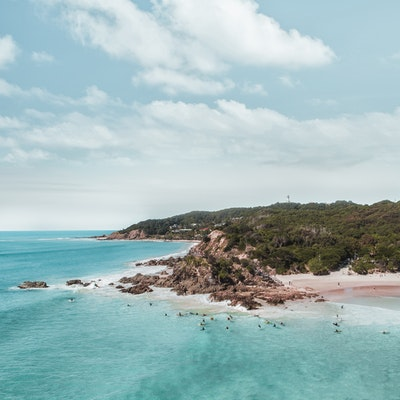

Despite the loss of its former splendour due to unrestricted mining and crushing of stones, Jaflong is still a ‘must-see’ destination for tourists visiting Sylhet. Flowing from the north Khasi mountains, the river Dauki enters Bangladesh under the name ‘Piyain’, along the bank of which lies the spectacular Jaflong.About 62 km north-east from Sylhet city , Jaflong is in the East Jaflong Union under Guainghat Upazilla. Visitors can hire boats to go to the Zero Point and see the beautiful hanging bridge over the Dauki. Just across the river on the western side are the villages Sangrampunji and Nakshiapunji, which are accessible through ferries or rented boats. Just beside Nakshiapunji is Jaflong Tea Garden which is a top tourist attraction.
 Facebook
Linkedin
Facebook Page
about
Facebook
Linkedin
Facebook Page
about